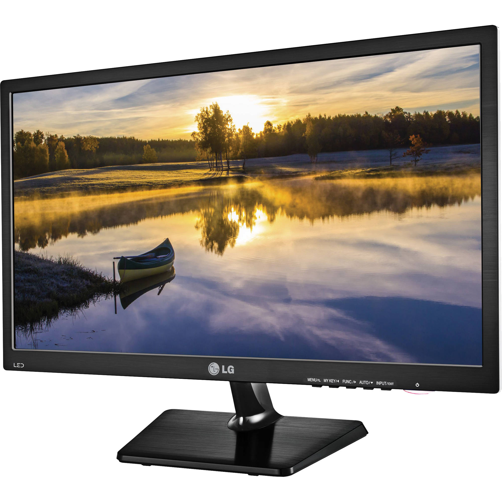

|  |
A liquid crystal display (LCD) monitor is a computer monitor or display that uses LCD technology to show clear images, and is found mostly in laptop computers and flat panel monitors. This technology has replaced the traditional cathode ray tube (CRT) monitors, which were the previous standard and once were considered to have better picture quality than early LCD variants. With the introduction of better LCD technology and its continuous improvement, LCD is now the clear leader over CRT, in terms of color and picture quality, not to mention capabilities for large resolutions. Also, LCD monitors may be made much more cheaply than CRT monitors. A liquid-crystal display (LCD) is a flat-panel display or other electronically modulated optical device that uses the light-modulating properties of liquid crystals combined with polarizers. Liquid crystals do not emit light directly, instead using a backlight or reflector to produce images in color or monochrome. LCDs are available to display arbitrary images (as in a general-purpose computer display) or fixed images with low information content, which can be displayed or hidden. For instance: preset words, digits, and seven-segment displays, as in a digital clock, are all good examples of devices with these displays. They use the same basic technology, except that arbitrary images are made from a matrix of small pixels, while other displays have larger elements. LCDs can either be normally on (positive) or off (negative), depending on the polarizer arrangement. For example, a character positive LCD with a backlight will have black lettering on a background that is the color of the backlight, and a character negative LCD will have a black background with the letters being of the same color as the backlight. Optical filters are added to white on blue LCDs to give them their characteristic appearance. |